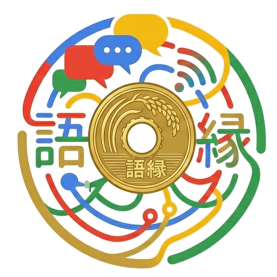

見つけられる
検索・マップ・SNSから、探している人と出会う。

GOEN語縁地域店舗・個人事業主のためのWeb導線設計
見つかる、信頼される、相談される。
売り込みなし / 初回相談無料 / 必要な施策だけご提案
相談につながる導線を設計します。
検索・マップ・SNSから、探している人と出会う。
強み・人柄・判断材料が伝わり、相談前の不安が下がる。
迷わず問い合わせできる流れを整える。
LP・HP制作を軸に、MEO・公式LINE・SNSまで。ばらばらの施策ではなく、見込み客が出会い、納得し、相談へ進むまでの流れとして設計します。
足りないのは努力ではなく、導線です。
FOUND
検索やGoogleマップで、探している見込み客に出会えていない。
TRUST
強み・人柄・判断材料が伝わらず、相談前の不安が残っている。
CONTACT
予約・問い合わせまでの導線が薄く、途中で離脱されている。
MEO・検索・SNSで出会う。
LP・HPで選ばれる理由を伝える。
事例・人柄・進め方で不安を減らす。
フォーム・LINE・電話へ迷わず進める。
LINEやSNSで再接点をつくる。
成果を検証し、次の一手へ磨く。
強み・人柄・信頼材料を整えます。
広告やSNSから、相談へつなげます。
Googleマップで見つかる土台を整えます。
予約後の再接点と関係づくりを設計します。
発信を相談へ近づけます。
検索で見つかり、ページで信頼され、LINEやフォームで相談につながる。
準備中
相談までの導線と見せ方を設計します。
来店・相談できる接点を整えます。
再来店につながる関係を設計します。
代表自身が発信を続けるなかで、人が何に反応し、何を信頼し、なぜ行動するのかを見てきました。
数字だけでは見えない、人の感情から導線を設計します。
GOENWeb Direction Design
LP制作と計測設定。広告やSNSの受け皿に。
この内容で相談するHP制作とMEO初期設計。地域店舗向けに。
この内容で相談するLP / HPと公式LINE導線設計。LINE予約口に。
この内容で相談するSNS運用設計とLP制作。発信を相談につなげます。
この内容で相談するどれが合うか分からない方も、無料相談で整理できます。
自分に合う始め方を相談するオンラインで気軽に。契約の話はまだしません。
事業と集客の状況を整理します。
不要な施策は「不要」とお伝えします。
内訳を明確にして整えます。
進捗を共有しながら作り込みます。
公開後も必要に応じて伴走します。
もちろんです。専門用語を使わず、現在の状況から一緒に整理します。
可能です。目的に合わせて、単品制作から組み合わせまで対応します。
できます。すでにHPをお持ちの場合は、今あるものを活かします。
ありません。不要だと判断した施策はこちらからお断りすることもあります。
不安なことも含めて、最初に整理できます。
不安なことも含めて無料で相談する「語」は言葉、「縁」はご縁。言葉でご縁をつなぎ、必要な人に必要な出会いを届ける。その導線をWeb上に設計します。
依頼前でも大丈夫です。30分相談OK、オンライン対応、強引な営業なし。今の状況を一緒に整理しましょう。
まずはLINEで、気軽にご相談ください。
予約が増えない原因、導線改善、サイト改善など。状況を送っていただければ、必要な施策だけをお返しします。
公式LINEで無料相談する売り込みなし初回相談無料オンライン対応